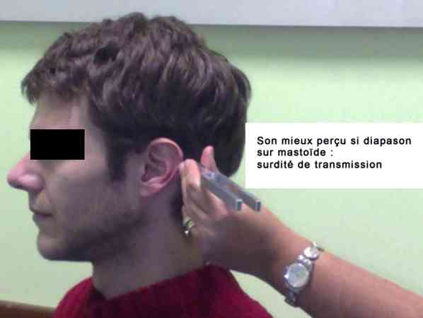

Bienvenue Sur Medical Education
Surdité brusque
Spécialité : orl / symptômes /
Points importants
-
Incidence = 5 à 20 pour 10 000 personnes par an (sous-estimation probable)
-
Surdité de perception d'apparition brutale idiopathique
-
Baisse de l'audition d'au moins 30dB sur 3 octaves consécutives, survenant en moins de 3 jours
-
Majoritairement, unilatérale. Bilatérale successive ou simultanée, rare (1à 5%)
-
Critères de diagnostic sont cliniques et audiométriques
-
Distinction entre :
-
surdité de perception = atteinte neurosensorielle de l'oreille interne
-
surdité de transmission = pathologie de l'oreille interne ou moyenne
-
surdité mixte
-
Surdité de perception = prise en charge spécialisée ORL H24 - 48
-
Taux de récupération (spontanée ou après traitement) = 55 à 70%
Présentation clinique / CIMU
SIGNES FONCTIONNELS
- surdité de perception = atteinte neurosensorielle de l'oreille interne
- surdité de transmission = pathologie de l'oreille interne ou moyenne
- surdité mixte
Présentation clinique / CIMU
SIGNES FONCTIONNELS
Généraux
- Nausées, vomissements
Spécifiques = surdité
- Partielle (déformation du son)
- Totale
Aspécifiques
- Acouphènes (70 à 90%)
- Vertiges, instabilité (20 à 40%)
Signes d'étiologies
- Fièvre
- Otalgie
- Otorrhée
- Eruption cutanée (zone Ramsay Hunt)
- Ecoulement du liquide céphalo-rachidien
- Atteinte neurologique focale (paralysie faciale)
CONTEXTE
Terrain
- Age moyen (40 - 55 ans)
- Sex ratio = 1
Traitement usuel
-
Récent :
- médicaments ototoxiques locaux (gouttes auriculaires) = gentamicine, sulfate de néomycine, ou tobramycine
- généraux = aminosides, salicylés, quinine, érythromycine, vancomycine
-
Au long cours :
- diurétiques de l'anse, interféron, certains antinéoplasiques (cisplatine), AVK
Antécédents
-
Récents :
- otologiques :
-
surdité de perception connue :
- otospongiose
- otite chronique - aiguë
- chirurgie = tympanoplastie/myringoplastie
- perforation tympanique post-infectieuse
-
traumatologique :
- traumatisme externe ou acoustique (exposition unique, accidentelle, grande intensité)
- perforation tympanique, fracture-luxation ossiculaire
- traumatisme pénétrant ou non de l'os temporal (fracture transversal rocher)
- blast auriculaire (gifle, explosion)
- barotraumatisme (accident de plongée, d'avion, manoeuvre de Valsalva)
- ponction lombaire (hypopression intracrânienne)
-
infectieux :
- méningite bactérienne (Streptococcus pneumoniae, Haemophilus influenzae)
- syphilis (phase secondaire ou tertiaire)
- virale = oreillons, rougeole, rubéole, groupe herpès, CMV, EBV
- pontage coronarien
- séance de radiothérapie
-
Au long cours :
- néoplasie ostéophile
- hypothyroïdie
- diabète
-
pathologies hématologiques :
- maladie thrombo-embolique
- terrain thrombophilique = néoplasie
- leucose
- drépanocytose
-
pathologie auto-immune, maladies de systèmes :
- sarcoïdose
- maladie de Wegener
- polychondrite atrophiante
- maladie de Behcet
- LED
- Périartérite noueuse
- syndrome Goujerot-Sjögren
- syndrome de Cogan
Facteurs de risque
- Prise médicamenteuse (aspirine)
- Terrain thrombo-embolique
- Bas débit vasculaire cochléaire = insuffisance vertébrobasillaire
Circonstances de survenue
- Spontanée
- Sur lieu de travail/traumatisme sonore répété
- Activité récente = barotraumatisme (plongée sous-marine, saut en parachute)
- Post traumatique = direct - indirect (blast)
- Post infectieuse ORL - de contact (neurologique)
- Contexte néoplasique
- Contexte vasculaire = thromboembolique, hémorragique
EXAMEN CLINIQUE
Général
-
Examen neurologique complet - examen de la nuque :
-
attention particulière concernant :
- paires crâniennes V, VII, VIII, IX et X
- recherche d'un syndrome vestibulaire (nystagmus)
- recherche d'un syndrome cérébelleux
-
attention particulière concernant :
- Examen cardio-vasculaire : souffle, arythmie
Spécifique
- Confirmation de la perte d'audition = intelligibilité (faire répéter les mots dits à chaque oreille)
-
Mise en évidence d'une surdité de perception par tests Weber/Rinne :
-
test de Weber :
- _287 Photo Test de Weber
- but : déterminer les 2 types de surdité
- étudie les 2 oreilles simultanément
- le diapason est posé sur le front ; le son est transmis par conduction osseuse aux oreilles internes
- il y a surdité de perception si le son est perçu du coté sain
- il y a surdité de transmission si le son est perçu du côté malade paradoxalement
-
test de Rinne :
- but : déterminer la surdité de transmission
- on fait d'abord vibrer le diapason appliqué sur la mastoïde ; le son est directement transmis par conduction osseuse à l'oreille interne
- on met ensuite le diapason devant le pavillon ; le son est transmis par voie aérienne par l'oreille externe et moyenne
- si le son est perçu (Rinne +) fort en conduction aérienne, l'oreille moyenne fonctionne bien ; la surdité est donc au niveau de l'oreille interne (surdité de perception)
-
test de Weber :
 _288 Photo Test de Rinne
_289 Photo Test de Rinne 2
D'étiologie
- Examen local du CAE = éliminer une éruption cutanée, une brûlure
- Examen otoscopique = éliminer une pathologie de l'oreille moyenne ou tympanique (perforation - OMA)
- Signes cliniques de maladies auto-immunes, néoplasiques, hématologiques
EXAMENS PARACLINIQUES SIMPLES
En fonction du terrain
- Diabétique, glycémie capillaire (décompensation diabétique)
- ECG
CIMU
- Tri 3 - 4
Signes paracliniques
BIOLOGIQUE
-
NFS plaquettes
-
TP TCA
-
Ionogramme sanguin, urée et créatinine sanguine
-
Glycémie
-
TSH
-
Cholestérol et TG
-
TPHA-VDRL
-
Sérologies virales (VIH, herpes)
IMAGERIE
-
Pas d'indication à une imagerie en urgence
-
Proposée à distance (3 à 4 semaines), IRM de l'angle pontocérébelleux avec injection de gadolinium = éliminer schwannome vestibulaire ou à défaut méningiome, cholestéatome apex pétreux, métastase, lipome
Diagnostic étiologique
-
Surdité brusque = surdité de perception idiopathique
Diagnostic différentiel
-
Inflammation/infection de la cochlée = infection virale, syphilis, méningite, encéphalite
-
Néoplasie = neurinome acoustique, autres tumeurs de l'angle cérébelleux-pontique
-
Anomalies endocriniennes = hypothyroïdie, diabète sucré
-
Atteinte vasculaire = anévrysme de l'artère cérébrale antéro-inférieure, athérosclérose
-
Pathologie inflammatoire générale :
-
infectieuse : OMA, zona auriculaire, méningite, encéphalite, maladie de Lyme, oreillons, syphilis
-
maladies auto-immunes :
-
syndrome de Cogan (kératite interstitielle bilatérale+ manifestations audio-vestibulaires)
-
maladie de Wegener [atteinte ORL (rhinite crouteuse obstructive) pulmonaire et rénale (GN, HTA)]
-
lupus Erythémateux Disséminé (éruption cutanée, douleur articulaire, atteinte rénale)
-
PAN (AEG, fièvre, IRC, HTA)
-
sarcoïdose (AEG, toux sèche, dyspnée, uvéite, syndrome sec)
-
polychondrite atrophiante (AEG + inflammation récidivante des cartilages)
-
maladie de Behçet (aphtose buccale, génitale et uvéite)
-
syndrome de Gougerot-Sjögren (syndrome sec)
Traitement
TRAITEMENT INTRAHOSPITALIER
Diagnostic étiologique
- Surdité brusque = surdité de perception idiopathique
Diagnostic différentiel
-
Inflammation/infection de la cochlée = infection virale, syphilis, méningite, encéphalite
-
Néoplasie = neurinome acoustique, autres tumeurs de l'angle cérébelleux-pontique
-
Anomalies endocriniennes = hypothyroïdie, diabète sucré
-
Atteinte vasculaire = anévrysme de l'artère cérébrale antéro-inférieure, athérosclérose
-
Pathologie inflammatoire générale :
-
infectieuse : OMA, zona auriculaire, méningite, encéphalite, maladie de Lyme, oreillons, syphilis
-
maladies auto-immunes :
-
syndrome de Cogan (kératite interstitielle bilatérale+ manifestations audio-vestibulaires)
-
maladie de Wegener [atteinte ORL (rhinite crouteuse obstructive) pulmonaire et rénale (GN, HTA)]
-
lupus Erythémateux Disséminé (éruption cutanée, douleur articulaire, atteinte rénale)
-
PAN (AEG, fièvre, IRC, HTA)
-
sarcoïdose (AEG, toux sèche, dyspnée, uvéite, syndrome sec)
-
polychondrite atrophiante (AEG + inflammation récidivante des cartilages)
-
maladie de Behçet (aphtose buccale, génitale et uvéite)
-
syndrome de Gougerot-Sjögren (syndrome sec)
Traitement
TRAITEMENT INTRAHOSPITALIER
- infectieuse : OMA, zona auriculaire, méningite, encéphalite, maladie de Lyme, oreillons, syphilis
-
maladies auto-immunes :
- syndrome de Cogan (kératite interstitielle bilatérale+ manifestations audio-vestibulaires)
- maladie de Wegener [atteinte ORL (rhinite crouteuse obstructive) pulmonaire et rénale (GN, HTA)]
- lupus Erythémateux Disséminé (éruption cutanée, douleur articulaire, atteinte rénale)
- PAN (AEG, fièvre, IRC, HTA)
- sarcoïdose (AEG, toux sèche, dyspnée, uvéite, syndrome sec)
- polychondrite atrophiante (AEG + inflammation récidivante des cartilages)
- maladie de Behçet (aphtose buccale, génitale et uvéite)
- syndrome de Gougerot-Sjögren (syndrome sec)
Traitement
TRAITEMENT INTRAHOSPITALIER
Stabilisation initiale
- Instauration d'un traitement par corticoïdes par voie générale (per os)
Suivi du traitement
- Par le spécialiste ORL
-
Indicateurs pronostiques :
- favorable = délai de prise en charge thérapeutique précoce
- défavorable = importance du degré de surdité
MEDICAMENTS
- Corticothérapie prednisone 60mg per os pendant 10 jours
- N.B. : Pas de preuve d'efficacité des autres thérapeutiques = corticoïdes transtympaniques, vasodilatateurs, antiviraux, anticoagulant, hémodilution normovolémique, oxygénothérapie hyperbare
Devenir / orientation
CRITERES D'ADMISSION / DE SORTIE
-
Pas d'indication à une hospitalisation en urgence
-
Suivi ambulatoire
ORDONNANCE DE SORTIE
-
Prednisone comprimés à 20 mg et 5 mg : 60 mg pendant 10 j
-
Décroissance progressive de 10 mg tous les 2 j
-
Pour réalisation d'une IRM de l'angle pontocérébelleux avec injection de gadolinium (délai 3 à 4 semaines)
-
Audiogramme par ORL entre 24 et 48h
RECOMMANDATIONS DE SORTIE
-
Eviter tout traumatisme sonore (protection auditive)
-
Eviter tout barotraumatisme (arrêt des activités à risque = plongée sous-marine, saut en parachute)
-
Arrêt de travail (car danger de mauvaise perception du bruit)
Mécanisme / description
Mécanisme / description
4 mécanismes évoqués
-
Origine virale :
- altération du labyrinthe membraneux et des neurones cochléaires
- possibilité d'une infection virale de la périlymphe ou du ganglion spiral
-
Rupture de la membrane intra-cochléaire :
- rupture de la membrane = fuite périlymphe
- conséquence = changement de gradient de pression entre les compartiments endo et périlymphatiques
- altération des potentiels endo-cochléaires
- Origine auto-immune = Anticorps anti-cochlée et anti-collagène de type II
-
Origine vasculaire :
- vascularisation de l'oreille interne = type terminal
- tout phénomène provoquant l'arrêt du flux sanguin = hypoxie tissulaire à l'origine surdité brusque
Algorithme
-
Algorithme : surdité brusque
_659 Algorithme Algorithme : surdité brusque
Bibliographie
-
Steven D. Rauch. Idiopathic sudden sensorineural hearing loss. N Engl J Med 359: 833- 40, Aug 2008
-
Mosnier I, Bouccara D, Sterkers O. Les surdités brusques en 1997: hypothèses éthiopathogéniques, conduite à tenir, facteurs pronostiques, traitements. Ann Otolaryngol Chir Cervicofac 1997, 114 : 251 - 266
-
Neeraj N Mathur, Inner Ear, Sudden Hearing Loss, 2006
-
Conlin A.E., Lorne S. Parnes. Treatment of Sudden hearing loss. Arch Otolaryngol Head Neck Surg. 2007; 133 : 573 - 586
-
Mosnier I, Boucara D, Atassi-Dumont M, Sterkers O. Traitements des surdités brusques : étude rétrospective de 144 cas. Rev Laryngo Otol Rhinol. 1998 ; 119, 2 : 119 - 128
Auteur(s) : Myriam CHEMOUNY, Albéric GAYET